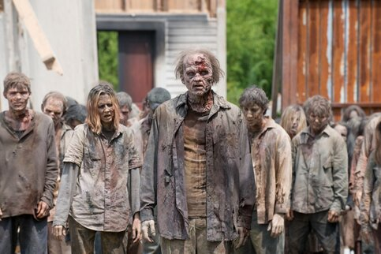

Описание
Смертельно опасный зомби-вирус может быть выпущен на свободу как вследствие ошибки в секретной биолаборатории, так и в результате применения биооружия. Схожий по воздействию с бешенством, он будет заставлять носителя искать жертву для того, чтобы передать себя ей и тем самым размножиться. Опасноть зомби-вируса и его основное отличие от бешенства состоит в том, что он не убивает свою жертву в конце. Наоборот, он сначала убивает носителя, а потом воскрешает его, как живого мертвеца. Вирус замедляет разложение тканей, позволяя жертве очень долго ждать свою добычу, оставаясь на месте смерти.
Зомби - зараженные люди и животные, алчущие живой плоти и крови. Незнающие жалости мертвецы набрасываются на нарушителей спокойствия и либо превращают их в себе подобных, либо поедают.Действия
-Первым делом найдите себе укрытие и обезопасьте его. Забаррикадируйте окна и укрепите дверь. -Старайтесь никогда не шуметь, даже находясь в укрытии. Звук будет привлекать зомби ближе к вашему дому. -При первой возможности сразу же запаситесь предметами первой помощи. -Найдите или изготовьте себе оружие. Желательно иметь топор или что-то подобное, чтобы при стычке держать зараженных как можно дальше от себя. Огнестрельное оружие используйте только в крайнем случае - звук выстрела только привлечет больше зомби. -Надевайте на себя максимально плотную одежду, которую зараженные не смогут прокусить. Если такой одежды нет - обмотайте рукава тканью, или привяжите что-то твердое и крепкое, чтобы принимать укусы этой областью без вреда для здоровья. -Передвигайтесь по улице тихо, обязательно ищите себе укрытие на ночь перед ее наступлением. -Перед контактом с людьми удостоверьтесь, что на них нет следов укусов или царапин. -Выходите на улицу только днём, ночью неподвижных мертвецов вам будет трудно заметить, тогда как вас учуять им труда не составит. -Сразу после контакта с зомби проверьте себя на наличие укусов. Если вам не повезло найти на себе хотя бы один - вы уже заражены. -Если рана находится на конечности, а вы еще находитесь в здравом рассудке, следует пожертвовать этой конечностью во благо выживания. Будет лучше, если ампутацией займется другой человек. После удаления конечности промойте рану, дезинфецируйте и перевяжите ее.Контакт с зомби
-Если у вас нет при себе оружия длиной хотя бы в человеческую руку - лучше убегайте, зомби сильны, но не так быстры, как взрослый человек. -При ударах или выстрелах обязательно цельтесь в голову. Боли зараженные не чувствуют, и пока жив мозг - они будут пытаться вас достать. -Если вы передвигаетесь группой, то выстройте тактику боя - один отвлекает зомби на себя и блокирует удары, а другой атакует зомби точно в голову из-за спины.